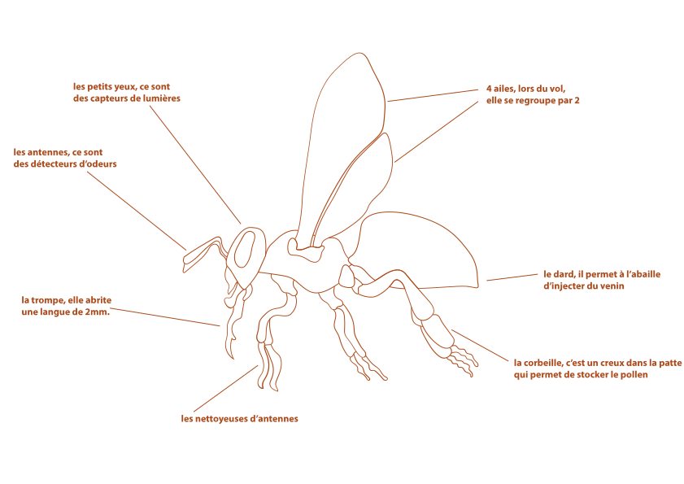

L’insecte est récompensé
La pollinisation garantit la reproduction sexuée des plantes. Cela est ainsi avantageux pour les insectes. La pollinisation est une relation mutualiste, ce qui veut dire que les deux partenaires pourront y tirer un avantage. Le nectar et le pollen représentent une récompense, c’est ce qui explique le fait que les insectes tirent également profit de la pollinisation comme le cas des abeilles. Ces dernières assurent la production de miel qui est un antibactérien assez puissant. Cependant, ces insectes sont menacés, vous pouvez tout connaitre sur ce sujet dans l’émission « C’est pas sorcier ».
